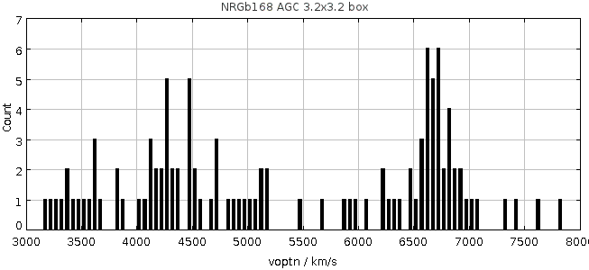
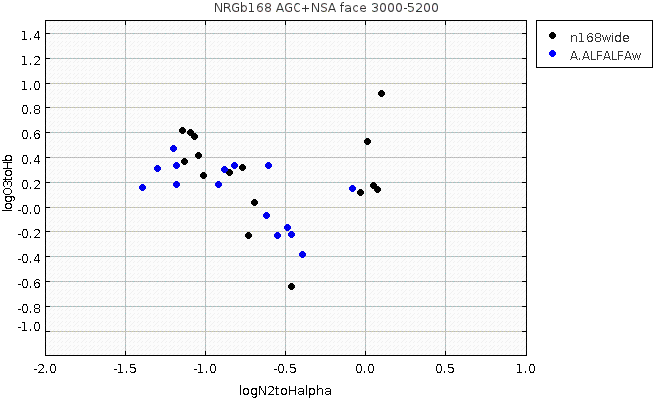

RA,Dec RA,Dec(deg) R(2Mpc) nz nopt cz sig logsig sig logLx dist*
WBL368 NRGb168 1158305+250823 179.6271 25.13972 1.7 10 18 4789 53 2.21 0.08 <41.60 0.00 71
At this distance, 2 Mpc = 1.7 degrees
So box should be RA > 177.93 & RA < 181.33
Dec > 23.44 & Dec < 26.84
Examine the broader velocity region in AGC in box of 3.2 x 3.2
Make subset from agcnorthminus1.csv:
radeg > 177.93 & radeg < 181.33 & decdeg > 23.44 & decdeg < 26.84

There is a peak between 4000 and 5000. Literature velocity and velocity dispersion 4789 +/-53 (162). 3sigma=159(486), 5sigma=265(810) Filamentary, plus more distant filament behind. This will need more work to constrain. For now, use 4 Mpc box and set velocity limits to be 3000 < vhelio < 5200. Find 58 AGC objects. Use agc+nsa.v012.mags+lines.appmags+faceHalpha.csv with subset: vhelio > 3000 & vhelio < 5200 & RA > 177.93 & RA < 181.33 & DEC > 23.44 & Dec < 26.84 Find: n168.agc.nsa.faceHa N = 33 Use a57+agc+nsa.v012.mags+lines.appmags+faceHalpha.csv n168.a57.nsa.faceHa N = 17 (all code 1,2) # AGCnr radeg_1 decdeg_1 vopt ABSMAG_i BA90 g-i vhelio logN2toHalpha logO3toHb v21 W50 sintp sn icode 731810 178.04959 26.81111 3675 -16.04159 0.91672814 0.228 3657 -0.8183432540803822 0.3274251207725711 3672 111 0.54 5.0 2 **NSA SF 731813 178.24083 25.50805 3622 -16.231133 0.937955 0.340 3623 -1.1984635088930788 0.46832559069558205 3636 60 0.44 5.6 1 **NSA SF 731815 178.32957 25.98944 5462 -17.148766 0.793082 0.311 5444 -1.1429380984968087 "" 5437 104 0.95 9.4 1 **NSA SF 749442 178.65041 24.1075 4456 -16.288727 0.58732 0.371 4426 -1.3895958898377767 0.1475814204340449 4531 217 0.75 4.4 2 **NSA SF 6883 178.74374 26.20222 5151 -19.631212 0.9211369 0.613 5145 -0.46165683181854605 -0.23238761716924028 5150 34 4.33 69.4 1 6898 178.89626 25.88917 5027 -20.025467 0.43749398 0.593 5027 -0.48916150519024004 -0.17617867998493825 5027 275 8.09 48.9 1 724244 179.11792 24.66472 5089 -18.31163 0.5299543 0.614 5092 -0.550952032398528 -0.24006775213415624 5086 154 1.43 12.6 1 **NSA SF 210936 179.36041 25.23278 4713 -18.807064 0.55844426 0.750 4469 -0.3924447947294985 -0.3869338727260778 4549 33 0.58 8.0 1 731831 179.46666 25.04833 4256 -17.81475 0.8840845 0.603 4264 -1.1804862941595102 0.17754263936393666 4273 90 1.54 15.0 1 **NSA SF 6977 179.77292 24.98889 4050 -19.918901 0.81206775 0.901 4040 -0.0812118209930236 0.14032981656647 4047 204 2.27 17.2 1 6980 179.77542 24.47278 3349 -17.129023 0.5156823 0.242 3339 -0.6048614403585526 0.32537043665427834 3342 36 4.61 78.0 1 **NSA SF 731853 179.77959 24.43639 3441 -15.633291 0.5262456 0.279 3432 -1.2982245746487295 0.30682987932674133 3433 181 2.05 16.1 1 **NSA SF 731871 180.01167 24.88917 3399 -16.127205 0.7506552 0.373 3382 -1.1803796884470623 0.3238053656505416 3378 43 0.61 10.0 1 **NSA SF 731873 180.06291 26.49528 3611 -16.845062 0.71867555 0.433 3553 -0.9159908033196199 0.1752232851864043 3556 70 0.51 7.0 1 **NSA SF 210992 180.18251 24.85556 4659 -19.021154 0.84111726 0.506 4660 -0.6163498536166748 -0.07488993584421431 4661 136 2.55 21.5 1 **NSA SF 7040 180.97333 25.43361 3234 -18.683784 0.52060413 0.318 3247 -0.882346846601128 0.2973095091377779 3233 122 15.12 135.1 1 **NSA SF 749228 181.2679 26.75333 0.0 -16.0676 0.7381411 0.487 3110 -2.4382403422749386 0.20307155199494137 3114 108 0.59 6.1 1 **NSA SFNow construct the BPT diagram of the two subsets:

Choose the subset which has logN2toHalpha < -0.5 : n168.agc.nsa.faceHa.SF.csv N = 23, 13 of which are in ALFALFA, as marked above. n168.agc.nsa.faceHa.SF.notalfalfa.txt # AGCnr radeg decdeg NSAID ABSMAG_i g-i vhelio logN2toHalpha logO3toHb 210866 178.10126 23.62695 160699 -17.776512 0.3518730000000012 3452.797549416 -0.7705342262263033 0.3141588006214778 731814 178.26958 24.2525 113939 -16.283148 0.6199550000000009 3468.383285808 -1.0694495977122154 0.5584444705238351 731818 178.52916 25.86278 113974 -16.322443 0.66568 3692.904110032 -0.7306716154324218 -0.23598070271742233 **Becky's list 719650 178.89583 23.49806 113914 -16.690392 0.44930499999999896 5147.754513904 -1.042160485362895 0.40593524156855554 724231 179.05042 25.7975 113997 -16.025946 0.26290100000000116 5100.047113984 -1.0901513683659805 0.5929281303596432 ** Becky's list 724254 179.19749 25.17417 114004 -16.527063 0.6635549999999988 4451.682458704 -0.6947056457496222 0.026989175554438954 **Becky's list 731857 179.82167 25.1575 119554 -16.360403 0.564783000000002 4300.122163416 -1.1285606392287453 0.3597033331655165 731860 179.85167 24.92667 119522 -16.167248 0.49614700000000056 4027.292406624 -1.1411444778519502 0.6100184606470938 **Becky's list 731863 179.93083 25.28444 119558 -16.834398 0.7066340000000011 3431.462102256 -0.8464314939464412 0.27331212738869237 **Becky's list 731914 181.22876 24.11333 119628 -16.335646 0.6219270000000012 3153.19576744 -1.010644449763614 0.24465070672052389 Becky's list has 7 objects, 5 of which are in NSA Face-on SF (agc+nsa.v012.mags+lines.appmags+faceHalpha.csv). One of the other 3 is also in NSA Face-on, but doesn't make SF cut: # AGCnr radeg decdeg NSAID BA90 ABSMAG_i g-i vhelio logN2toHalpha logO3toHb 6952 179.5425 25.12222 119539 0.84181 -21.05045 1.18325900000 4455.730992956 -0.032474603653 0.11245672965300554 The other is not in the NSA: # AGCnr radeg decdeg a b vopt 731844 179.62334 24.76833 0.25 0.17 4393. That makes 6 with Ha, not HI, and 5 additional galaxies that are SF according to NSA, with 12 total.
| Cluster/group | References |
|---|---|
| WBL368 = NRGb 168 |